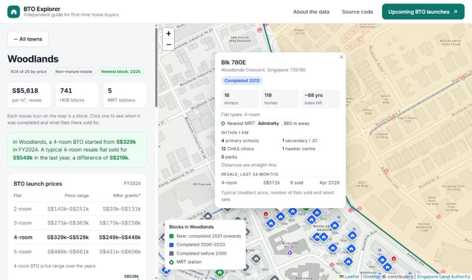
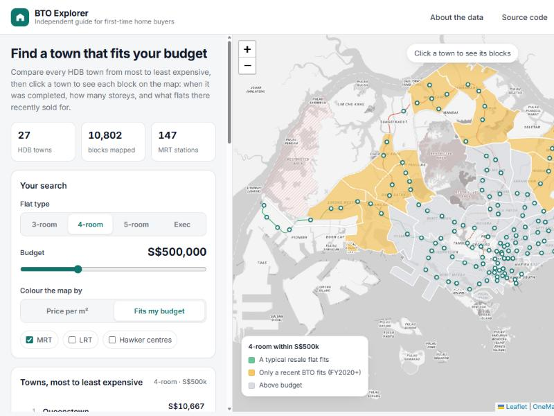

BTO Explorer: helping couples find a home they can afford
Buying a first home means comparing towns, BTO launches and resale prices that are spread across different government sites. I built an independent map that brings it together, right down to every HDB block.

The problem
When young couples start looking for their first home, the same questions come up: which towns can we afford? What did BTO flats there cost? What do resale flats really go for? How old is that block, and is there an MRT nearby?
The answers exist, but they're spread across different datasets and sites. I wanted one place to compare towns quickly, then zoom in to the actual blocks.
The project started as a resale price analysis. I turned it into a tool that people can actually use.
What I built
- A town map ranked from most to least expensive, by resale price per m² over the last 12 months.
- A budget mode: pick a flat type and budget to see where a typical resale flat fits, and where only a recent BTO launch fits.
- Every HDB block on the map. 10,802 blocks appear as house icons, coloured by age. Click one for its completion year, storeys, homes, lease left, flat types and resale prices from the last 24 months.
- What's nearby: each block shows its nearest MRT station and distance, plus the primary schools, secondary schools, CHAS clinics, parks and hawker centres within 1 km. Each of these can also be switched on as a map layer.
- A town panel with BTO launch prices (including after grants) since FY2008, the gap between BTO and resale prices, MRT/LRT stations and hawker centres.

How it works
Prices in SQL
245,000+ resale sales are cleaned with pandas, then loaded into SQLite. Medians by town and flat type are calculated with window functions, since SQLite has no MEDIAN().
Geography with Shapely
Town boundaries are simplified so the map loads quickly. 613 MRT and LRT exits are grouped into 188 stations, and stations, hawker centres and blocks are placed inside their towns.
Blocks loaded per town
All the block data adds up to about 3 MB, so each town has its own small file. It only loads when you open that town, so the first page load stays light.
Nearby, with NumPy
For each of the 10,802 blocks, vectorised haversine distances find the nearest MRT station and count the schools, clinics, parks and hawker centres within 1 km. School postal codes are placed with OneMap's search, once, and cached.
The hardest part: data with no shared ID
HDB publishes block details (street name, completion year, storeys, homes) and building locations as two separate datasets. They don't share an ID: the locations only have a street code like YIA06H, while the details use a street name like YISHUN AVE 6.
My solution was to compare which block numbers appear on each. A street code and a street name that list mostly the same block numbers, in the same town, must be the same street.
same town · 84% of block numbers in common → same street
- A mistake I caught: my first version also compared the numbers inside the codes, which matched some streets to the wrong town. Limiting matches to the same town fixed it.
- Result: 10,802 of 10,817 residential blocks placed on the map.
- Checking it: I looked up 40 random blocks by postal code on OneMap, the government's official map. All 40 matched; one was just written differently ("GDN" vs "GARDEN").
Key decisions
Don't show upcoming BTO projects from guesswork.
The only "under construction" dataset turned out to be from 2018. Rather than show out-of-date projects, the site links to HDB's official Flat Portal for upcoming launches.
Only count recent BTO launches (FY2020 onwards) in budget mode.
HDB's price table covers different towns each year. A 2016 launch price would make a town look far more affordable than it is today.
A clean public-service look, but not HDB's branding.
It should feel trustworthy and familiar without anyone mistaking it for an official HDB site, so every page says it's independent.
Explain the limits on the page itself.
Lease left is an estimate, "after grants" uses the grants HDB published at the time, and new blocks have no resales because of the 5-year minimum occupation period. Users see all of this where it matters.
From "next steps" to shipped
When I first published this case study, I listed three next steps. I've since built all three.
Show the distance from each block to its nearest MRT station.
Every block now shows its nearest MRT station and how far it is. The typical block is 670 m from a station, and 3,491 blocks are within 500 m. Distances are straight-line: real walking routes would need a routing service, so the site says so rather than guessing walking times.
Add layers for schools, clinics, parks and supermarkets.
Added 337 MOE schools, 1,193 CHAS clinics and 462 NParks parks, both as map layers and as counts within 1 km of every block. Supermarkets aren't included because no open dataset has their locations, only yearly totals.
Refresh the data every month with GitHub Actions.
A scheduled workflow now downloads all ten datasets on the 3rd of every month, rebuilds the site's files and publishes any changes. Its first test run failed: data.gov.sg blocks Python's default User-Agent. I found that by reproducing it locally, then fixed it and added retries. The next run worked and pulled in that month's new resale sales.
What I'd do next
- Real walking routesUse OneMap's routing service to show walking time to the nearest MRT.
- Shortlist and compareLet couples save a few blocks and compare them side by side.
- Data testsAutomated checks that fail the monthly update if a dataset's format changes.
Try it yourself
Pick a town, then click any block on the map.